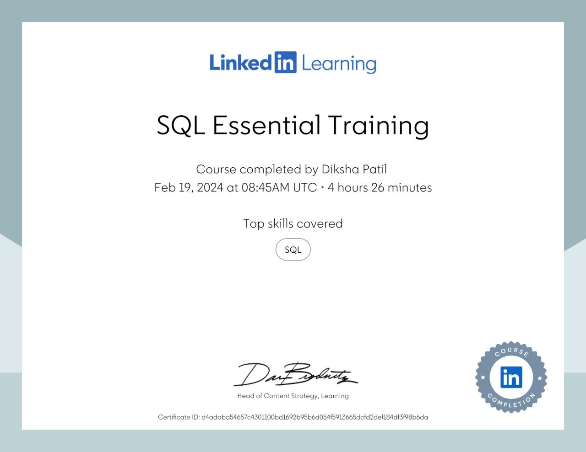
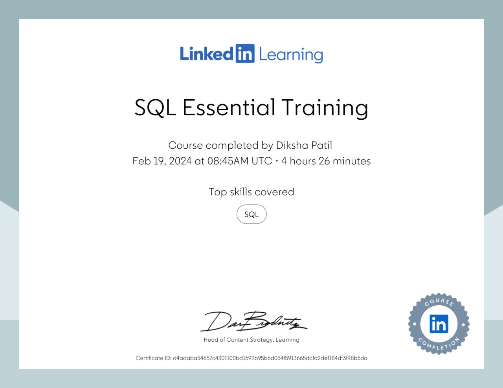

Ms. Diksha Sudhakar Patil
- Zoho Creator & Zoho Analytics Developer
- Zoho Creator Certified Business User
- Salesforce Admin; CRM Sales and Customer Service
- ITIL Foundation course completed. Pursuing certification.
- HTML, pursuing DBMS (SQL)
- Advanced excel for data analytics.
- IT Project Lead: Ability to plan, monitor and execute projects, working in high pressure and strict deadlines.
- Techno-functional skills: ERP, Problem Solving, BRS / BRD critical review, procurement, with thorough understanding of supply chain and logistics IT.
- IT Process Administrator: Reporting / MIS and designing SOPs & review mechanisms.
OBJECTIVE
To grow as techno-functional consultant practicing ITIL principles, delivering a reliable and robust IT service.
SKILLS & ABILITIES
- Zoho Creator & Zoho Analytics Developer
- Zoho Creator Certified Business User
- Salesforce Admin; CRM Sales and Customer Service
- ITIL Foundation course completed. Pursuing certification.
- HTML, pursuing DBMS (SQL)
- Advanced excel for data analytics.
- IT Project Lead: Ability to plan, monitor and execute projects, working in high pressure and strict deadlines.
- Techno-functional skills: ERP, Problem Solving, BRS / BRD critical review, procurement, with thorough understanding of supply chain and logistics IT.
- IT Process Administrator: Reporting / MIS and designing SOPs & review mechanisms.
Certifications:

 
